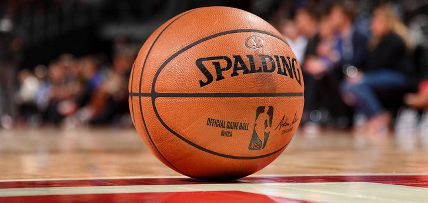

¿Que es la F1?
Es la principal competición de automovilismo internacional y el campeonato de deportes de motor más popular y prestigioso del mundo

¿Que es la NBA?
La National Basketball Association, más conocida simplemente por sus siglas NBA, es una liga privada de baloncesto profesional que se disputa en Estados Unidos desde 1949..
¿Introduccion de la F1?
Desde septiembre de 2016, tras la adquisición de Formula One Group, la empresa estadounidense Liberty Media es la responsable de gestionar y operar el campeonato.La mayoría de los circuitos de carreras donde se celebran los Grandes Premios son autódromos, aunque también se utilizan circuitos callejeros y anteriormente se utilizaron circuitos ruteros

¿Introduccion de la NBA?
La National Basketball Association, más conocida simplemente por sus siglas NBA, es una liga privada de baloncesto profesional que se disputa en Estados Unidos desde 1949.El 6 de junio de 1946 se firmó el nacimiento de lo que, con el paso del tiempo, se convirtió en una de las ligas deportivas más seguidas en todo el mundo.
